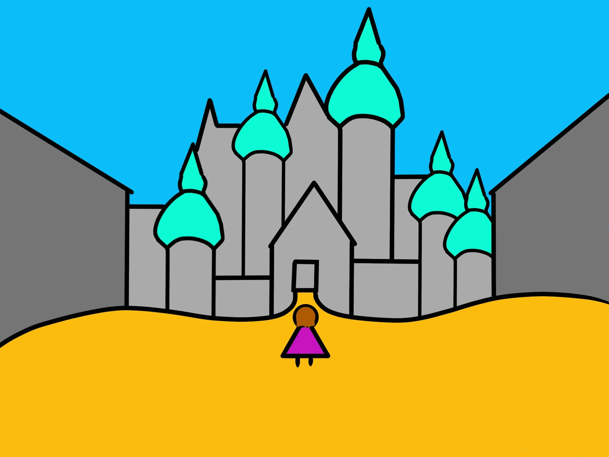
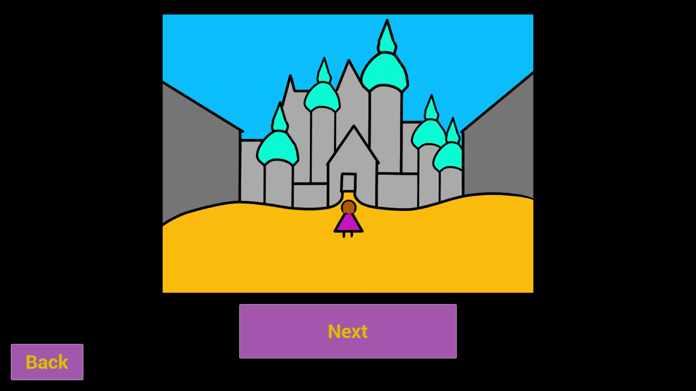
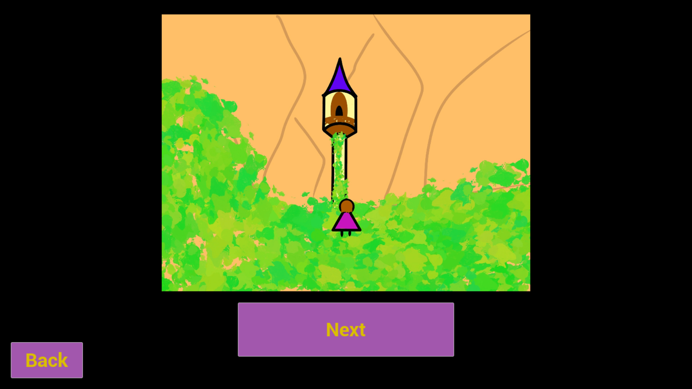
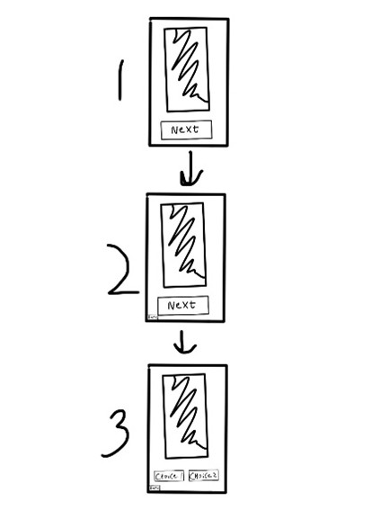

Tangled Memories
About:
In the first term of my first year at Creative Media & Game Technologies, I created an interactive prototype called Tangled Memories for the Design Thinking module.
This is an expansion of the Disney Tangled franchise about Rapunzel.
It is a Choose-Your-Own-Adventure-comic book with multiple different stories and endings.
The drawing quality is not that high, because it is more a proof of concept.
The focus was on quick iteration and quality interaction.
Created by:

Engine:
Made in Unreal Engine
Platforms:
Windows
Screenshots:



Process:
Research
For this project, I wanted to find an IP with a well-defined universe, with established characters, settings, and lore.
This richness can provide more depth for analysis and exploration.
After deciding to use Tangled, I started researching the franchise and created a mind map with its different characters, media, and storylines.

I found we are empathizing mainly with teens/adolescents.
Mainly girls, but still a lot of boys too. Many people have seen the Tangled movie, but not a lot have seen the Series.
The people who have seen the Series are mainly ‘hardcore’ Tangled or Disney fans.

It is an ‘old’ and not-so-active franchise by now, but Discord servers dedicated to Tangled and the unofficial Tangled subreddit are still very active.
Disney+ contains the movie, Before Ever After, the Series and Ever After.
This way, almost all visual content can be watched.

By means of a survey, shared online, with 3 short and open questions, so people can write as much or as little as they want, I happened to get quite a lot of responses, although many people have only seen the movie.
I came to the following conclusions:
- The ending of season 3 of Tangled: The Series is not liked by the community.
- Rapunzel should have ended up with long hair still.
- The Series has too many filler episodes.
- The animation of the movie is stunning.
Additionally, about the series, many people find the long blonde hair of Rapunzel prettier than the short brown hair. The character of Shorty has changed too much for a target group of children in the series, so he makes all sorts of gross jokes. The writing of season 3 of the Series does not make sense for the general story of the Series. The plot is changed weirdly with a wrong focus.
Fans would like to see a Tangled 2, a Tangled live action, more music, an anime series, a comic book and/or manga series, and a 3rd book as a continuation of Lost Lagoon and Vanishing Village, which was meant to happen but never did.
Fans of the ‘Tangled’ franchise need a deeper story because the writers did not take the time and effort to create a logical end to the story (of the series).
SWOT analyses of my best solutions
Creating a manga (series) with a deep story about Rapunzel struggling with her trauma.Strengths
- Manga is a good medium to convey emotions to the reader.
- A series can always be made longer. Sequels and prequels are possible. Spin-off series are also possible.
- Many requested issues could be addressed.
- Manga is a new medium for the Tangled series.
- Expanding the (back)story and lore of all existing media is possible (movie, series, books, etc.)
- The manga fanbase could become interested in the Tangled franchise, and the franchise could become more popular.
- The Tangled fanbase could become interested in manga, and manga could become more popular.
- More people could become interested in Disney and their franchises as a whole.
- It takes a lot of time to create a manga.
- Higher costs for the reader. (For example: a subscription to a series of manga comics.)
- Other mangas could be competition.
- The fans who like manga might be too niche.
Strengths
- Anime is a good medium to convey emotions to the viewer.
- A series can always be made longer. Sequels and prequels are possible. Spin-off series are also possible.
- Many requested issues could be addressed.
- Anime is a new medium for the Tangled series.
- Expanding the (back)story and lore of all existing media is possible (movie, series, books, etc.)
- It takes a lot of time to create an anime.
- You need technical skills to create an anime.
- How will the anime get to the viewers? Disney Channel, subscription online, etc.?
- How will the anime be promoted?
- The anime fanbase could become interested in the Tangled franchise, and the franchise could become more popular.
- The Tangled fanbase could become interested in anime, and anime could become more popular.
- More people could become interested in Disney and their franchises as a whole.
- Other animes could be competition.
- The fans who like anime might be too niche.
Strengths
- DLC can be used to expand the game. Sequels and prequels are possible. Spin-off series are also possible (although DLC is a more logical approach).
- A new and interactive way to experience the Tangled franchise, while being completely invested, because you play as Rapunzel.
- Many requested issues could be addressed.
- Expanding the (back)story and lore of all existing media is possible (movie, series, books, etc.)
- It takes a lot of time to create a game.
- You need technical skills to create a game.
- It is hard to convey emotions to the player; cutscenes would probably have to be used.
- Creating cutscenes takes a lot of time.
- The gaming fanbase could become interested in the Tangled franchise, and the franchise could become more popular.
- The Tangled fanbase could become interested in gaming, and gaming could become more popular.
- More people could become interested in Disney and their franchises as a whole.
- Other games could be competition.
Creating a manga (series) with a deep story about Rapunzel struggling with her trauma. My main reasons are:
- Creating a manga takes less time than creating an anime or a game, so the quality can be better than the latter.
- Almost all sorts of issues with the former Tangled media can be addressed in a manga.
- Manga is a good medium to convey emotions to the reader. It is a better and easier way to do this in a manga than in a game, for example.
- A series can always be made longer. Sequels and prequels are possible. Spin-off series are also possible.
- A completely new fanbase for the Tangled franchise (manga readers) could become interested in the Tangled franchise.
- Expanding the (back)story and lore of all existing media is possible (movie, series, books, etc.)
- Manga comics can be sold (thus displayed and also indirectly advertised) almost anywhere: bookstores, supermarkets, comic stores, game stores, gas stations, etc.

I made a first technical prototype in Unreal Engine according to the following principle:
Now it was time to write out the full story!
Story
Introduction:After the events of the Tangled series and movie, Rapunzel has finally found her place as the princess of the kingdom. However, she continues to grapple with the trauma from her years in the tower with Mother Gothel. As she begins her life anew, she faces new challenges and decisions.
Chapter 1: Echoes of the Tower
Every night, she is haunted by her traumatic memories. She screams during the night, and Eugene and the others can hardly get any sleep. One sunny morning, Rapunzel walks through town and sees the towers of her castle. (Black and white sketches of the towers) She gets flashbacks, bringing back painful memories of her captivity, and she falls to the ground.
Eugene finds her and gives her the choice:
Choices:
- Rapunzel can choose to confront her past and explore the tower, hoping to find closure.
If chosen, proceed to Chapter 2: Exploring the tower. - Rapunzel can decide to ignore the towers and continue with her daily life.
If chosen, proceed to Chapter 6: *Spoiler*. Again. Castle edition.
Chapter 2: Exploring the tower
When in the tower, after inspecting the stuff that she had used all those years, she sees the mural she painted all those years ago and remembers how it gave her hope. A guard, however, sees the broken mirror. Eugene says it was from the battle he and Mother Gothel had.
The knight sees the bloody knife and the long brown hair that was once Rapunzel’s.
Choices:
- The knight ignores it and continues to protect Rapunzel.
If chosen, proceed to chapter 3: *Spoiler*. Again. Tower edition. - The knight thinks Eugene is a murderer.
If chosen, proceed to chapter 4: Eugene, a murderer. - The knight thinks Rapunzel is a murderer.
If chosen, proceed to chapter 5: Rapunzel, a murderer.
Chapter 3: *Spoiler*. Again. Tower edition.
From Chapter 2
Rapunzel in the tower sees her long, dead hair and lets a tear fall. It falls on the dead hair, however, and it seems to come to life!
It fights Rapunzel, and the guard tries to protect her.
The knight is strangled, and the hair grows back onto Rapunzel’s short hair. Everything immediately turns gold again.
They decide to get home as soon as possible.
Proceed to chapter 7: The Family Dilemma.
Chapter 4: Eugene, a murderer
From Chapter 2
The knight shouts murderer and Rapunzel lets a tear fall. It falls on the dead hair, however, and it seems to come to life! The hair grows back onto Rapunzel’s short hair. Everything immediately turns gold again.
The knight flees back to the village and publicly accuses Eugene of murder. He goes on prattling about how Eugene said he fought Gothel and how the broken mirror is a sign of struggle. He also says there was a bloody knight, and the only thing that was left from Gothel was a cape beneath the tower.
Eugene was found guilty of murder. There was too much evidence. Eugene was locked away for the rest of his life in the dungeons of the castle.
Proceed to chapter 13: Sadly Ever After.
Chapter 5: Rapunzel, a murderer
From Chapter 2
The knight shouts murderer and Rapunzel lets a tear fall. It falls on the dead hair, however, and it seems to come to life! The hair grows back onto Rapunzel’s short hair. Everything immediately turns gold again.
The knight flees back to the village and publicly accuses Rapunzel of murder. He goes on prattling about how Rapunzel would have wanted revenge because she was never allowed to leave the tower. She would have cut off her own hair that still lies in the tower, in an attempt to strangle Gothel. Afterwards, she must have stabbed Gothel and pushed her out of the window. That explains why the only thing left from Gothel was a cape beneath the tower.
Rapunzel was found guilty of murder. There was too much evidence.
Proceed to chapter 14: Tangled once again.
Chapter 6: *Spoiler*. Again. Castle edition.
From Chapter 1
Rapunzel feels weaker since her hair was cut off. It went little by little, but now her life is endangered.
The kingdom is searching for a cure for her, but hasn’t found it. Now the princess’s life is in danger, a guard confesses he had dried the sunflower after the tea for the queen was boiled 20 years ago. He planned to use it for himself one day, but he gave in. The flower is crumbled and put into boiling water.
After Rapunzel drinks it, the whole room starts to glow as Rapunzel’s hair immediately magically grows back, too.
Rapunzel starts to ascend with her head back (sideview with frog perspective). Afterwards, she falls to the ground.
After a couple of days, she feels better.
Proceed to chapter 7: The Family Dilemma.
Chapter 7: The Family Dilemma
From Chapter 3 or 6
Rapunzel and Eugene are happily married, but they are now faced with a difficult situation: starting a family.
While Eugene is excited about the prospect of becoming a father someday, Rapunzel is filled with fear and anxiety about what it means to be a parent. Rapunzel's only parental figure was Mother Gothel, who was not a loving and nurturing caregiver. She was raised without the presence of a loving and supportive mother or father figure, which leads to doubts about her own ability to be a good parent.
This fear of perpetuating harm or making mistakes as a parent is common among individuals who have experienced trauma in their own upbringing.
Choices:
- Rapunzel can decide to seek advice from Queen Arianna.
If chosen, proceed to chapter 8: mommy issues. - Rapunzel can open up to Eugene about your fears.
If chosen, proceed to chapter 9: Eugene's perspective.
Chapter 8: Mommy issues
From Chapter 7
Rapunzel seeks advice from her mother about starting a family, hoping to gain insight and support.
Choices:
- Queen Arianna can choose to get angry at Rapunzel.
If chosen, proceed to chapter 10: Insanity. - Queen Ariana can choose to give Rapunzel advice.
If chosen, proceed to chapter 11: Motherly advice.
Chapter 9: Eugene's perspective
From Chapter 7
While Rapunzel grapples with her past and the prospect of parenthood, Eugene is confronted by internal struggles.
Choices:
- Eugene can choose to get angry at Rapunzel.
If chosen, proceed to chapter 10: Insanity. - Eugene can decide to plan a surprise romantic date for Rapunzel.
If chosen, proceed to chapter 12: Love is healing.
Chapter 10: Insanity
From Chapter 8 or 9
After this, Rapunzel turns insane! She realizes that her whole life has been struggles, and the only ones she thought loved her take a dark turn when things get hard.
She cries and screams.
Proceed to chapter 13: Sadly Ever After.
Chapter 11: Motherly advice
From Chapter 8
Rapunzel fears that she could unintentionally repeat some of the negative patterns she experienced with Mother Gothel if she becomes a parent herself. Queen Arriana tells her daughter that mistakes are a part of parenthood. We learn from our children, and they help us grow as parents.
Eugene comes walking to her and says he has a surprise.
Proceed to chapter 12: Love is healing.
Chapter 12: Love is healing
From Chapter 9
“Blondie, I want to show you something.”
Rapunzel and Eugene end up on the boat like in ‘At Last I See The Light’. In the end, they end up stargazing. While Rapunzel cries in Eugene's arms, she falls asleep.
Chapter 13: Sadly Ever After
From Chapter 4 or 10
Rapunzel isolated herself from society and now lives in exile, acting crazy with wild, long, dirty hair. The last thing seen of her is a noose of golden hair.
Chapter 14: Tangled Once Again
From Chapter 5
Rapunzel gets locked away in the dungeons of her castle, never to be seen by men ever again. Her hair is tied up on the roof so she can’t strangle herself. (Bird view)
Playtest
After drawing every drawing and creating the final prototype, it was time for the playtest!Notes / Feedback: -
Likes
- Good story
- Chapter names and numbers are vague
- Story is a bit all over the place
- -
- Expand with more chapters and choices
Expand the slides to give more context to the story. Remove the chapter names and numbers and emphasize the choices.
Likes
- The darker tones of the story
- Pacing
- -
- Make more! to make the pacing better
Expand the slides to give more context to the story.
Likes
- Very cool how you drew everything yourself
- Interesting idea
- I like that I can choose what to say
- There are multiple storylines, which is fun
- I get kind of confused about who I am sometimes when making decisions
- Also, when u explore the tower, there is a third person that gets killed or something, and I don’t really understand who that is or what’s going on
- With most story things, it takes a while before I (kind of) understand what is happening because if you don’t explore, she suddenly is sick, and then something happens, but I don’t really understand it
- I don’t really understand what is going on sometimes, so I guess my question is, what’s happening?
- Add a little more text for context so we know what is happening
Implement more text to give more context to the story.
Likes
- Good storyline
- Fun drawings
- Nice that there are options
- The options are fun
- Drawings are not always clear, so the story is not always clear
- I didn’t really understand the first chapter, but later I saw that she saw the towers of the past
- Maybe more context with the drawings
- Maybe a longer story
Good solution, give more context to the drawings.
Full survey results
- What are some problems you have with the movie?
- Eugene should never have cut Rapunzel’s hair.
- Her hair should have grown back.
- The horse needed more screen time.
- Czech dub.
- What are some problems you have with the series?
- Season 3.
- Her hair should have grown back. Again.
- Too many filler episodes.
- What things and/or media would you want to have for Tangled?
- A game where you play as Rapunzel and have to escape the tower to build a new life.
- A game for Nintendo Switch/laptop where you have to complete puzzles to go see the lanterns.
- I would like to see more games, music and an anime based on Tangled.
- I’d love to have a comic series actually! Something cute, like in the style of lore Olympus maybe.
- Tangled spin offs or comic/novels... Mainly 3rd book as continuation of Lost Lagoon and Vanishing Village (that was meant to happen but never did).
- Maybe a haircare line.
- A lore game.
- An anime in the tradition of Japanese storytelling; with strong character development of more characters, Fruits Basket style, where Rapunzel really struggles with her traumas, not just a power woman who doesn’t care, because she went through some serious stuff.
Conclusion
The problem is based on the users and needs from the empathy map. It has clear indirect causes and consequences with references. I have used various types of sources, such as articles, interviews, surveys, and statistics. The three solutions relate to the problem, pains, and gains from my empathy map and research. I have tested the suitability of these three solutions based on SWOT analyses. The interactive prototype provides a complete user flow, with relevant functionalities that solve the defined problem. There are four testers with recorded results to see if the prototype resolves the defined problem.During this project, I developed my skills in Unreal Engine, Prototyping, Procreate, Immersive Storytelling, Design Thinking and Gathering and Applying Feedback.
Link:
Download it for free on my Itch page!
Download the Windows version for free on my Itch page!